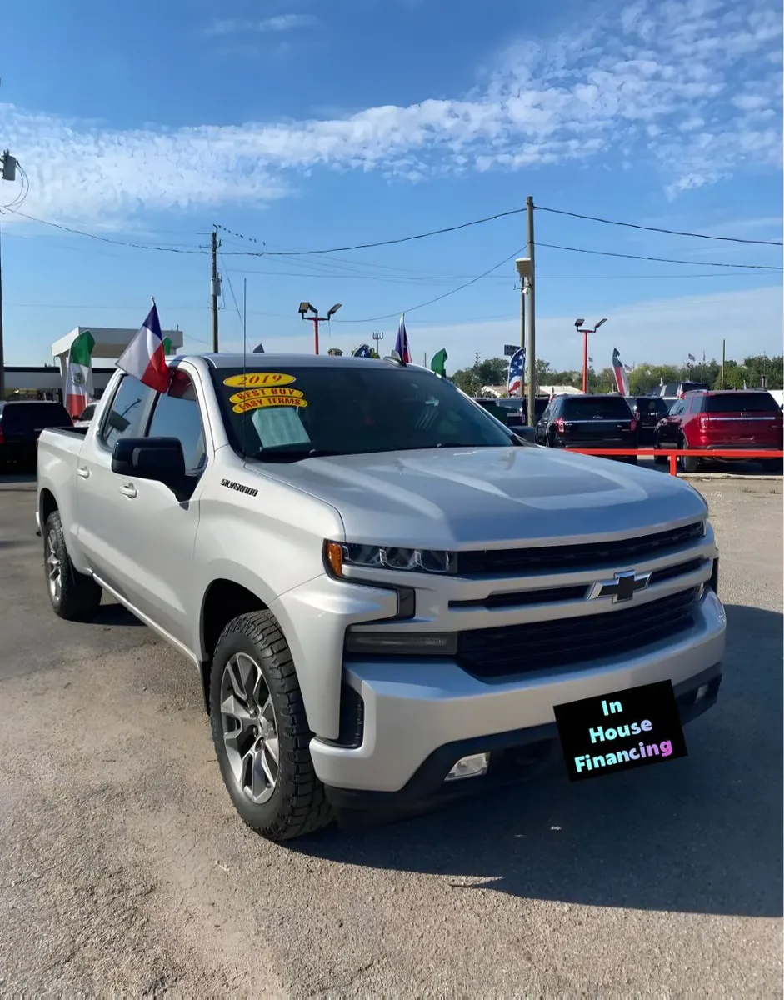

Volver al inventario

1/52019 Chevrolet Silverado RST
- Año
- 2019
- Millas
- 122,000
- Tipo
- Troca
O pregunta algo concreto
Año, millas y características salen de los datos del inventario; confirma los datos exactos de esta unidad con el dealer. Esta ficha no muestra precios: el dealer los da por escrito.
Datos generales
| Año | 2019 |
|---|---|
| Marca | Chevrolet |
| Modelo | Silverado RST |
| Tipo | Troca |
| Color | Gris |
| Millas | 122,000 millas |
| Tracción | Por confirmar |
Especificaciones del modelo
| Motor | 5.3L V8 (el más común; opciones: 4.3L V6, 2.7L Turbo, 6.2L V8, 3.0L Duramax diésel) |
|---|---|
| Potencia | 355 hp (5.3L V8; 285 el 4.3L V6, 310 el 2.7L, 420 el 6.2L, 277 el diésel) |
| Torque | 383 lb-pie (5.3L V8; 305 el 4.3L V6, 348 el 2.7L, 460 el 6.2L y el diésel) |
| Transmisión | Automática 6, 8 o 10 velocidades según motor |
| Tracción del modelo | RWD o 4WD (varía según unidad) |
| Consumo (MPG) | Ciudad: varía según motor: 20 (2.7L), 16-17 (5.3L), 16 (6.2L), 23 (diésel). Carretera: varía según motor: 23 (2.7L), 21-23 (5.3L), 20 (6.2L), 33 (diésel) |
| Combustible | Gasolina (diésel opcional) |
| Remolque máximo | 12200 (máximo configurado; varía según unidad) |
| Asientos | 3 o 5-6 |
| Carrocería | Pickup (cabina regular, doble cabina o crew cab) |
Datos típicos de este año y modelo, tomados de fuentes públicas (fabricante, KBB, Edmunds). El motor, la tracción y el equipamiento exactos de esta unidad los confirma el dealer.